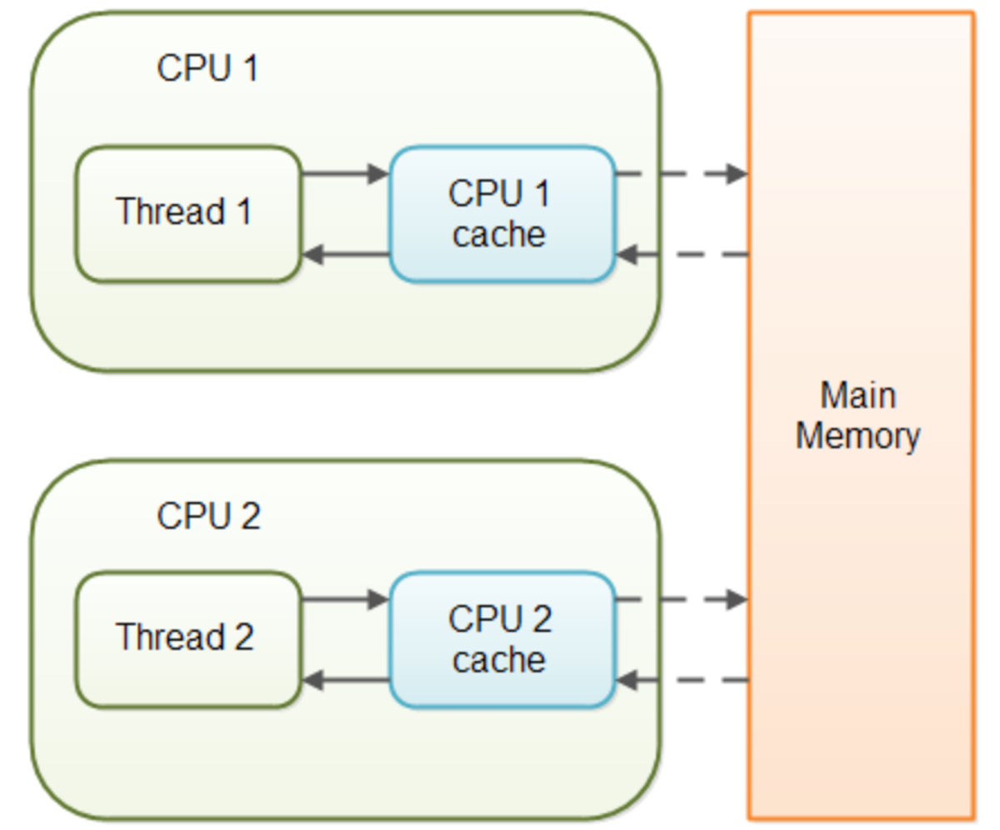

1. Implement Thread Safe Blocking Queue
Code:
class BoundedBlockingQueue {
private int capacity;
private Deque<Integer> que;
private static final Object LOCK = new Object();
// OOD - implement a non-param constructor.
public BoundedBlockingQueue() {
this(3);
}
public BoundedBlockingQueue(int capacity) {
this.capacity = capacity;
this.que = new LinkedList<>();
}
public void enqueue(int element) throws InterruptedException {
synchronized (LOCK) {
while (this.que.size() == this.capacity)
LOCK.wait();
// instead of calling LOCK.notifyALL() directly, add a condition
// since if the que is not empty then no threads will wait, we don't need to call notifyAll() method.
if (this.que.isEmpty())
LOCK.notifyAll();
this.que.offer(element);
}
}
public int dequeue() throws InterruptedException {
synchronized (LOCK) {
while (this.que.isEmpty())
LOCK.wait();
if (this.que.size() == this.capacity)
LOCK.notifyAll();
return this.que.poll();
}
}
public int size() {
synchronized(LOCK) {
return this.que.size();
}
}
}Tips:
- method
wait()
- Defined in class
Object. - Inhereted by all objects.
- A thread invoking
wait()will suspend the thread. - A thread invoking
wait()must own the intrinsic lock of the object it is callingwait()from. wait()method must be in a try-catch block that catches InterruptedExceptions.- All threads that call
wait()on an object are placed in a poll of waiting threads for that object.
- method
notify()
- Defined in class
Object. - Inhereted by all objects.
- Execution resumes when another thread calls the
notify()mehtod of the object our first thread is waiting on. - When
notify()of an object is called, then a single waiting thread on that object is signaled to get ready to resume execution.
- method
notifyAll()
- Defined in class
Object. - Inhereted by all objects.
- Notifies all the waiting threads.
- These waiting threads would then compete to see which single thread resumes execution, the rest of the threads would once again wait.
2. Classes for Locking
Besides using synchronized block to realize Thread Saft Blocking Queue, we can also use Lock implementations. They allow more flexible struturing, may have quite different properties, and support multiple associated Condition objects.
(1). Interface Lock
documentjava.util.concurrent.locks
A lock is a tool for controlling access to a shared resource by multiple threads. Commonly, a lock provides exclusive access to a shared resource: only one thread at a time can acquire the lock and all access to the shared resource requires that the lock be acquired first. However, some locks may allow concurrent access to a shared resource, such as the read lock of a ReadWriteLock.
To use them, first instantiate a lock.Lock lock = bew ReentrantLock();
Then follow this pattern
lock.lock();
try {
// use shared resource
} finally {
lock.unlock();
}Differences between Lock and synchronized block
- A
synchronizedblock is fully contained within a method, whereas we can havelock()andunlock()operations in sepatate methods. - A
synchonizedblock doesn’t support the fairness, any thread can acquire the lock once released, no preference can be specified. We can achieve fairness within theLock APIsby specifying thefairnessproperty. It makes sure that no thread is starved out from accessing a resource. - A thread gets blocked if it can’t get an access to the synchronized block. The
Lock APIprovidestryLock()method. The thread acquires lock only if it’s available and not held by any other thread. This reduces blocking time of thread waiting for the lock - A thread which is in “waiting” state to acquire the access to synchronized block, can’t be interrupted. The
Lock APIprovides a methodlockInterruptibly()which can be used to interrupt the thread when it’s waiting for the lock
(2). Class ReentrantLock
documentjava.util.concurrent.locks.ReentrantLock
The ReentrantLock class implements the Lock interface and provides synchronization to methods while accessing shared resource. The code which manipulates the shared resource is surrounded by calls to lock() and unlock() method.
The ReentrantLock allows threads to enter into lock on a resource more than once. When the thread first enters into lock, a hold count is set to one. Before unlocking the thread can re-enter into lock again and every time hold count is incremented by one. For every unlock request, hold count is decremented by one and when hold count is 0, the resource is unlocked.
(3). Interface Condition
documentjava.util.concurrent.locks
Condition factors out the Object monitor methods (wait, notify and notifyAll) into distinct objects to give the effect of having multiple wait-sets per object, by combining them with the use of arbitrary Lock implementations. Where a Lock replaces the use of synchronized methods and statements, a Condition replaces the use of the Object monitor methods.Conditions (also known as condition queues or condition variables) provide a means for one thread to suspend execution (to "wait") until notified by another thread that some state condition may now be true. Because access to this shared state information occurs in different threads, it must be protected, so a lock of some form is associated with the condition. The key property that waiting for a condition provides is that it atomically releases the associated lock and suspends the current thread, just like Object.wait.
A Condition instance is intrinsically bound to a lock. To obtain a Condition instance for a particular Lock instance use its newCondition() method.
Example: Implement Thread Safe Blocking Queue using Lock and Condition
class BoundedBlockingQueue {
private int capacity;
private Deque<Integer> que;
private Lock lock = new ReentrantLock();
private Condition notFull = this.lock.newCondition();
private Condition notEmpty = this.lock.newCondition();
// OOD - implement a non-param constructor.
public BoundedBlockingQueue() {
this(3);
}
public BoundedBlockingQueue(int capacity) {
this.que = new LinkedList<>();
this.capacity = capacity;
}
public void enqueue(int element) throws InterruptedException {
this.lock.lock();
try {
while (this.que.size() == this.capacity)
this.notFull.await();
this.que.add(element);
this.notEmpty.signal();
} finally {
this.lock.unlock();
}
}
public int dequeue() throws InterruptedException {
this.lock.lock();
try {
while (this.que.isEmpty())
this.notEmpty.await();
this.notFull.signal();
return this.que.poll();
} finally {
this.lock.unlock();
}
}
public int size() {
this.lock.lock();
try {
return this.que.size();
} finally {
this.lock.unlock();
}
}
}(4). Class Semaphore
documentjava.util.concurrent.Semaphore
A counting semaphore, used to restrict the number of threads that can access some resource.
- Each
acquire()blocks if necessary until a permit is available, and then tasks it. - Each
release()adds a permit, potentially releasing a blocking acquirer.
3. volatile modifier
First, we have to understand a little about the Java memory model.
- In Java, each thread has a separeate memory space (CPU cache). Each thread copies variables from main memory into CPU cache.
- Memory writes that happen in one thread can “leak through” and be seen by another thread, but this is by no means guaranteed. Without explicit communication, you can’t guarantee which writes get seen by other threads, or even the order in which they get seen.
- Special mechanisms to guarantee that communication happens between these threads would be needed.
What does volatile mean in Java?
- The Java
volatilemodifier is an example of a special mechanism to guarantee that communication happens between threads. When one thread writes to avolatilevariable, and another thread sees that write. volatilekeyword is intended to address variable visibility problem.- It is not suitable for cases where we want to Read-Update-Write as an atomic operation. For example, if two threads are both reading and writing to a shared variable, then using
volatilekeyword for that is not enough, using synchronized in that case to guarantee that the reading and writing of that variable is atomic. (synchronizationmodifier supports mutual execlusion and visibility.)
volatile vs. atomic
- An atomic action is one that effectively happeds all at once. An atomic action cannot stop in the middle: it either happens completely, or it doesn’t happen at all.
VolatileandAtomicare two different concepts.Volatileensures, that a certain, expected (memory) state is true across different threads, whileAtomicsensure that operation on variables are performed atomically.Volatile Does Not Mean Atomic!
For example,
volatile int i = 0;
Thread 1:
i++;
Thread 2:
i--;Should i become 0 after program execution ? No!
First we need to know that ++ operation is not atomic. What i++ does is equivalent to i = i + 1. It does one read and one write – is not atomic.
If we do an increment of a volatile integer, three separate operations are actually performing:
- Read the integer to a local.
- Increment the locl.
- Write the integer back out to the volatile filed.
So, what we really have is this:volatile i = 0; Thread 1: r1 = i; r2 = r1 + 1; i = r2; Thread 2: r3 = i; r4 = r3 + 1; i = r4;
So, if Thread 1 and 2 both read v and see the value 0, then Thread 1 will write 1 to it and Thread 2 will write -1 to it.
To solve this problem, that is we want an atomic increment, we need to use `java.util.concurrent.atomic` classes, like `AtomicInteger`.